Spring Boot：文件上传与 OSS
文件上传
简介
文件上传，是指将本地图片、视频、音频等文件上传到服务器，供其他用户浏览或下载的过程。
文件上传在项目中应用非常广泛，我们经常发微博、发微信朋友圈都用到了文件上传功能。
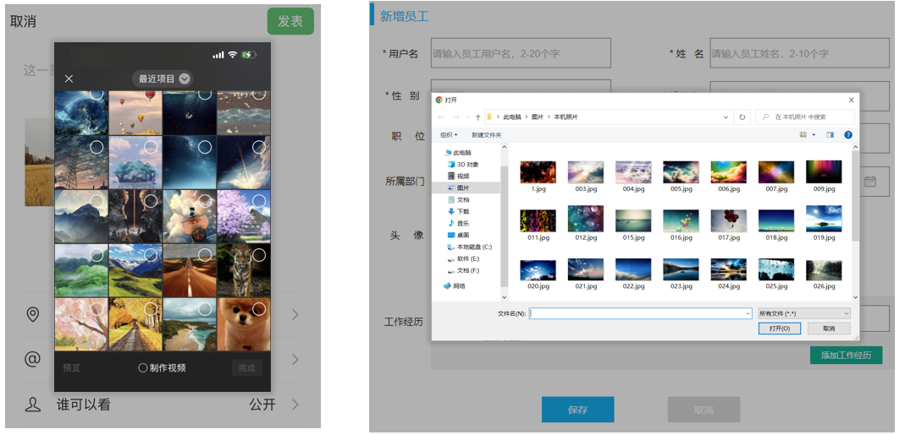
在我们的案例中，在新增员工的时候，要上传员工的头像，此时就会涉及到文件上传的功能。在进行文件上传时，我们点击加号或者是点击图片，就可以选择手机或者是电脑本地的图片文件了。当我们选择了某一个图片文件之后，这个文件就会上传到服务器，从而完成文件上传的操作。
**AI提示词：**你是一名java开发工程师，现在正在学习文件上传功能，如何基于HTML+SpringBoot完成文件上传功能。
1). 生成的前端代码形式如下:
注意这里必须要实现 encty="multipart/form-data" ;
否则 提交的是图片的命名 ;
实现了提交文件的格式 后 实现提交文件的二进制内容 ;
<!DOCTYPE html>
<html lang="en">
<head>
<meta charset="UTF-8">
<title>上传文件</title>
</head>
<body>
<form action="/upload" method="post" enctype="multipart/form-data">
姓名: <input type="text" name="username"><br>
年龄: <input type="text" name="age"><br>
头像: <input type="file" name="file"><br>
<input type="submit" value="提交">
</form>
</body>
</html>
上传文件的原始form表单，要求表单必须具备以下三点（上传文件页面三要素）：
- 表单必须有file域，用于选择要上传的文件
- 表单提交方式必须为POST：通常上传的文件会比较大，所以需要使用 POST 提交方式
- 表单的编码类型enctype必须要设置为：multipart/form-data：普通默认的编码格式是不适合传输大型的二进制数据的，所以在文件上传时，表单的编码格式必须设置为multipart/form-data
前端页面的3要素我们了解后，接下来我们就来验证下所讲解的文件上传3要素。
在提供的"课程资料"中有一个名叫"文件上传"的文件夹，直接将里的 upload.html 文件，复制到springboot项目工程下的static目录里面。
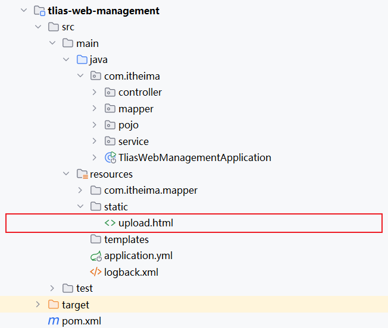
2). 生成的服务端代码形式如下
package com.itheima.controller;
import lombok.extern.slf4j.Slf4j;
import org.springframework.web.bind.annotation.PostMapping;
import org.springframework.web.bind.annotation.RestController;
import org.springframework.web.multipart.MultipartFile;
import java.io.File;
import java.io.IOException;
@Slf4j
@RestController
public class UploadController {
/**
* 上传文件 - 参数名file
*/
@PostMapping("/upload")
public Result upload(String username, Integer age , MultipartFile file) throws Exception {
log.info("上传文件：{}, {}, {}", username, age, file);
if(!file.isEmpty()){
file.transferTo(new File("D:\\images\\" + file.getOriginalFilename()));
}
return Result.success();
}
}
在定义的方法中接收提交过来的数据 （方法中的形参名和请求参数的名字保持一致）
这里建议使用 火狐 家的浏览器 : 专注于用户开发使用 , 内部实现的网络请求实现可以查看源文件 和 查看文本内容和 上传图片的缩略图 ;
- 用户名：
String name - 年龄：
Integer age - 文件：
MultipartFile file
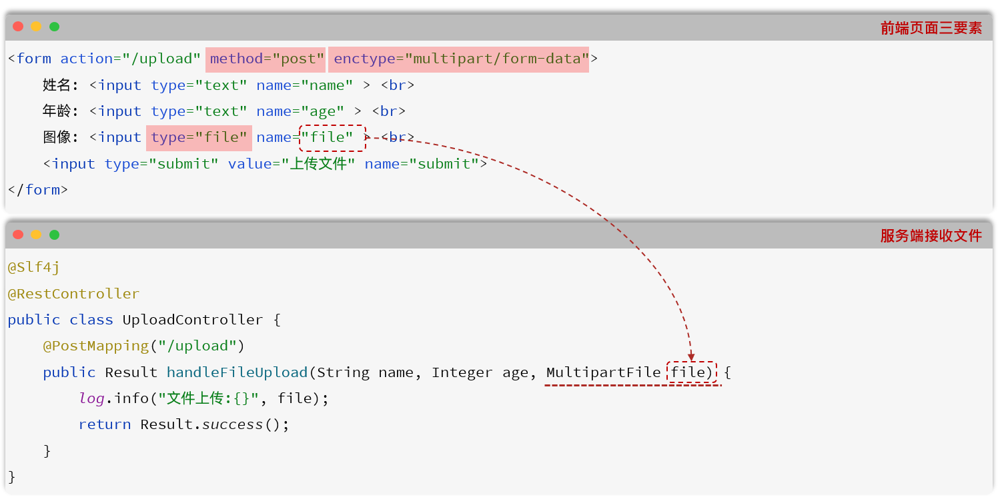
Spring中提供了一个API：MultipartFile，使用这个API就可以来接收到上传的文件
问题1：如果表单项的名字和方法中形参名不一致，该怎么办？
public Result upload(String username,
Integer age,
MultipartFile image) //image形参名和请求参数名file不一致
解决：使用@RequestParam注解进行参数绑定
public Result upload(String username,
Integer age,
@RequestParam("file") MultipartFile image)
本地存储
上面我们已经完成了文件上传最基本的功能实现，已经可以在服务端接收到上传的文件，并将文件保存在本地服务器的磁盘目录中了。 但是我们测试的时候发现，如果上传的文件名相同，后面上传的会覆盖前面上传的文件，那接下来，我们就要来优化这一块的功能。
**AI提示词：**请完善上述代码, 将接收到的文件存储在本地的磁盘目录中(D:/images)中, 并要保证上传的文件名不重复
代码实现如下：
package com.itheima.controller;
import com.itheima.pojo.Result;
import lombok.extern.slf4j.Slf4j;
import org.springframework.web.bind.annotation.PostMapping;
import org.springframework.web.bind.annotation.RestController;
import org.springframework.web.multipart.MultipartFile;
import java.io.File;
import java.util.UUID;
@Slf4j
@RestController
public class UploadController {
private static final String UPLOAD_DIR = "D:/images/";
/**
* 上传文件 - 参数名file
*/
@PostMapping("/upload")
public Result upload(MultipartFile file) throws Exception {
log.info("上传文件：{}, {}, {}", username, age, file);
if (!file.isEmpty()) {
// 生成唯一文件名
String originalFilename = file.getOriginalFilename();
String extName = originalFilename.substring(originalFilename.lastIndexOf("."));
String uniqueFileName = UUID.randomUUID().toString().replace("-", "") + extName;
// 拼接完整的文件路径
File targetFile = new File(UPLOAD_DIR + uniqueFileName);
// 如果目标目录不存在，则创建它
if (!targetFile.getParentFile().exists()) {
targetFile.getParentFile().mkdirs();
}
// 保存文件
file.transferTo(targetFile);
}
return Result.success();
}
}
MultipartFile 常见方法： 创建出 的 file 文件中有很多 已经包装好的方法 :
在 Spring 项目中上传的单个文件 大小 最大 为 1 M ;
String getOriginalFilename();//获取原始文件名void transferTo(File dest);//将接收的文件转存到磁盘文件中 : 内部上传的是 File 对象( 目标路径 );long getSize();//获取文件的大小，单位：字节byte[] getBytes();//获取文件内容的字节数组InputStream getInputStream();//获取接收到的文件内容的输入流
注意这里解决文件名重复使用的随机生成文件名的方式 :
借助的是本地导入的 java.util.UUID , 内部创建的随机数生成 , 一定保证不重复 -> 32 位字串 ;
UUID..randomUUID().toString() ; 这种方式生成的文件名基本不会重复 ; 十分方便 ;
利用 Apifox 测试，注意：请求参数名和controller方法形参名保持一致。
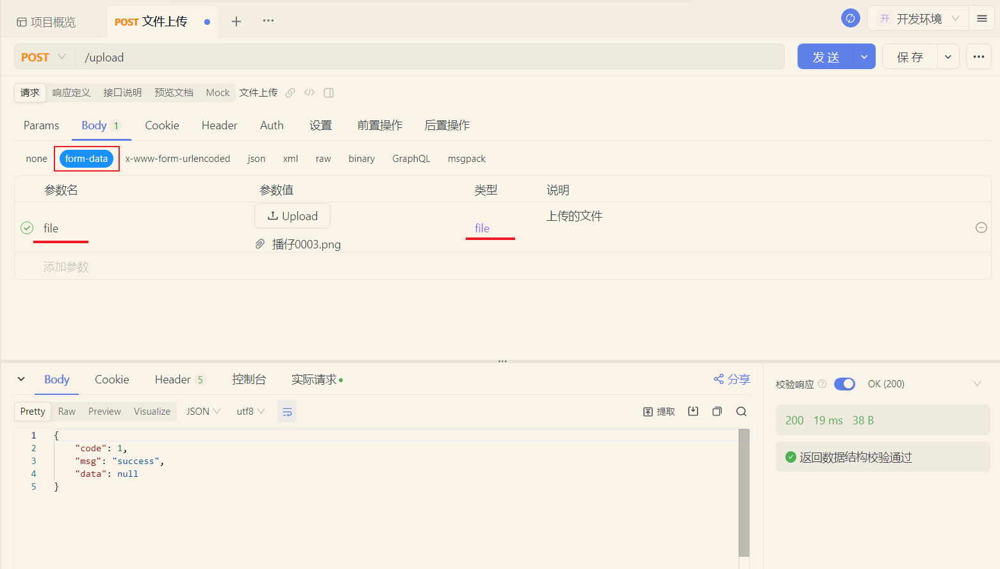
通过 Apifox 测试，我们发现文件上传是没有问题的。
在解决了文件名唯一性的问题后，我们再次上传一个较大的文件(超出1M)时发现，后端程序报错：
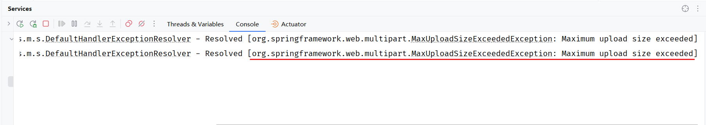
报错原因呢，是因为：在SpringBoot中，文件上传时默认单个文件最大大小为1M
那么如果需要上传大文件，可以在 application.properties 进行如下配置：
spring：
servlet:
multipart:
max-file-size: 10MB
max-request-size: 100MB
到时此，我们文件上传的本地存储方式已完成了。但是这种本地存储方式还存在一问题：
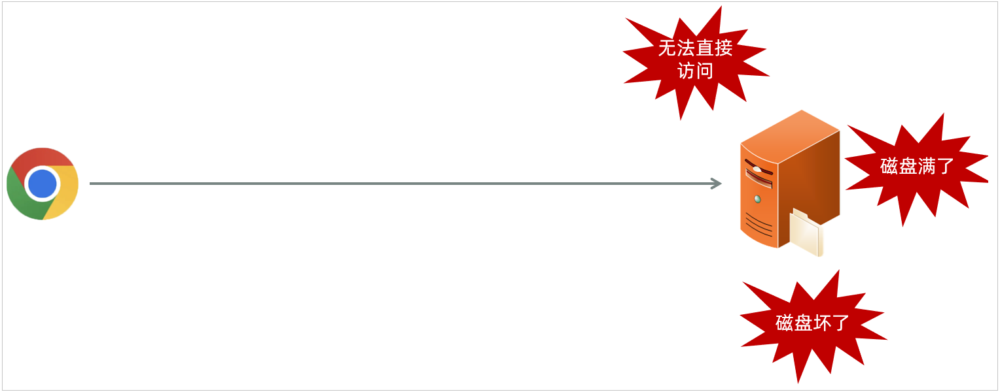
如果直接存储在服务器的磁盘目录中，存在以下缺点：
- 不安全：磁盘如果损坏，所有的文件就会丢失
- 容量有限：如果存储大量的图片，磁盘空间有限(磁盘不可能无限制扩容)
- 无法直接访问
为了解决上述问题呢，通常有两种解决方案：
- 自己搭建存储服务器，如：fastDFS 、MinIO
- 使用现成的云服务，如：阿里云，腾讯云，华为云
阿里云OSS
准备
介绍
阿里云是阿里巴巴集团旗下全球领先的云计算公司，也是国内最大的云服务提供商 。
云服务指的就是通过互联网对外提供的各种各样的服务，比如像：语音服务、短信服务、邮件服务、视频直播服务、文字识别服务、对象存储服务等等。
当我们在项目开发时需要用到某个或某些服务，就不需要自己来开发了，可以直接使用阿里云提供好的这些现成服务就可以了。比如：在项目开发当中，我们要实现一个短信发送的功能，如果我们项目组自己实现，将会非常繁琐，因为你需要和各个运营商进行对接。而此时阿里云完成了和三大运营商对接，并对外提供了一个短信服务。我们项目组只需要调用阿里云提供的短信服务，就可以很方便的来发送短信了。这样就降低了我们项目的开发难度，同时也提高了项目的开发效率。（大白话：别人帮我们实现好了功能，我们只要调用即可）
云服务提供商给我们提供的软件服务通常是需要收取一部分费用的。
阿里云对象存储OSS（Object Storage Service），是一款海量、安全、低成本、高可靠的云存储服务。使用OSS，您可以通过网络随时存储和调用包括文本、图片、音频和视频等在内的各种文件。
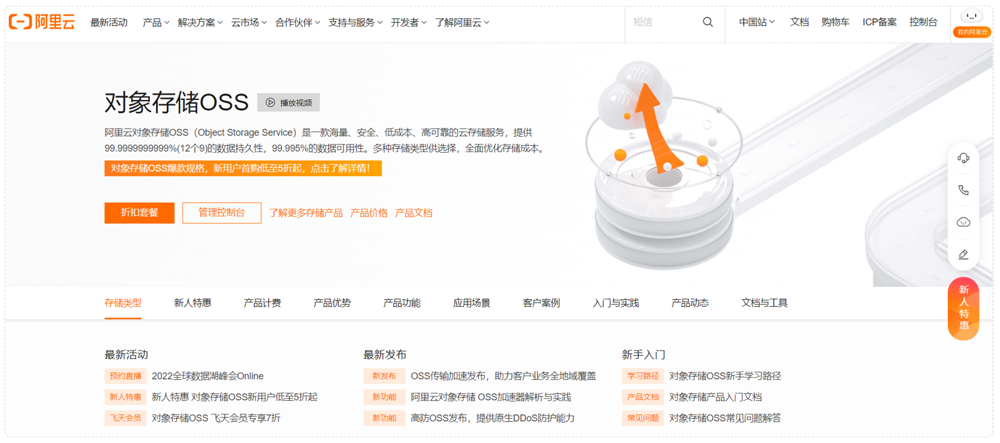
在我们使用了阿里云OSS对象存储服务之后，我们的项目当中如果涉及到文件上传这样的业务，在前端进行文件上传并请求到服务端时，在服务器本地磁盘当中就不需要再来存储文件了。我们直接将接收到的文件上传到oss，由 oss帮我们存储和管理，同时阿里云的oss存储服务还保障了我们所存储内容的安全可靠。
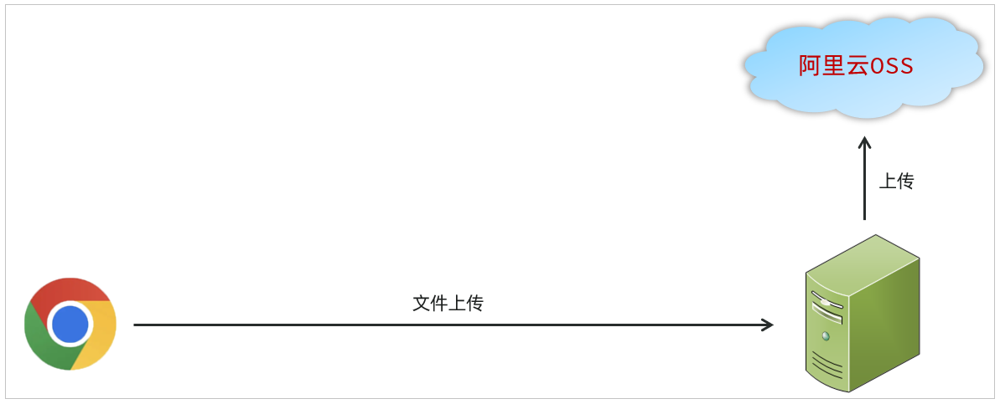
那我们学习使用这类云服务，我们主要学习什么呢？其实我们主要学习的是如何在项目当中来使用云服务完成具体的业务功能。而无论使用什么样的云服务，阿里云也好，腾讯云、华为云也罢，在使用第三方的服务时，操作的思路都是一样的。
SDK**：**Software Development Kit 的缩写，软件开发工具包，包括辅助软件开发的依赖（jar包）、代码示例等，都可以叫做SDK。
简单说，sdk中包含了我们使用第三方云服务时所需要的依赖，以及一些示例代码。我们可以参照sdk所提供的示例代码就可以完成入门程序。
第三方服务使用的通用思路，我们做一个简单介绍之后，接下来我们就来介绍一下我们当前要使用的阿里云oss对象存储服务具体的使用步骤。
**Bucket：**存储空间是用户用于存储对象（Object，就是文件）的容器，所有的对象都必须隶属于某个存储空间。
账号准备
下面我们根据之前介绍的使用步骤，完成准备工作：
1). 注册阿里云账户（注册完成后需要实名认证）
https://account\.aliyun\.com/login/login\.htm?oauth\_callback\=https%3A%2F%2Fwww\.aliyun\.com%2F
2). 注册完账号之后，就可以登录阿里云

开通OSS云服务
1). 通过控制台找到对象存储OSS服务
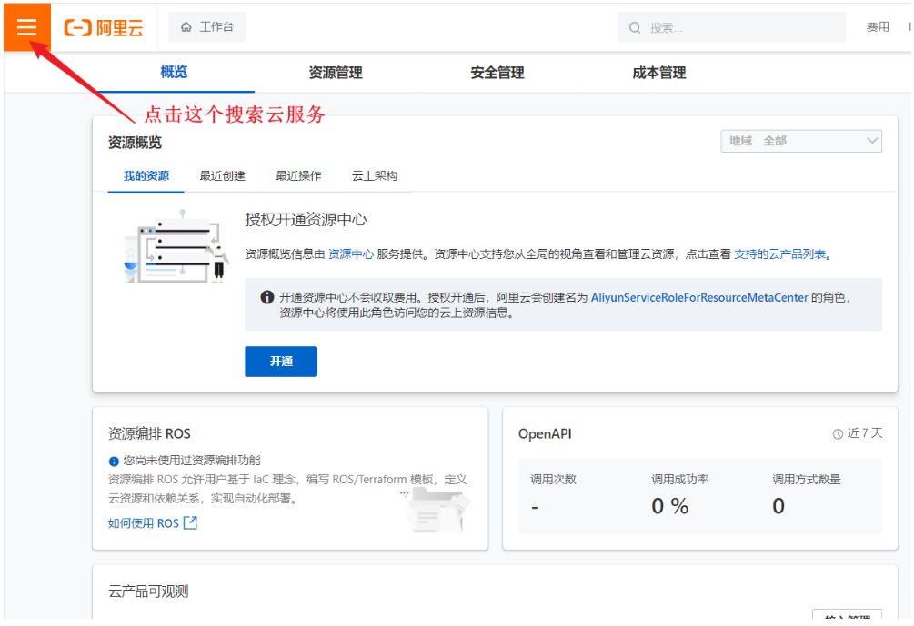
选择要开通的服务
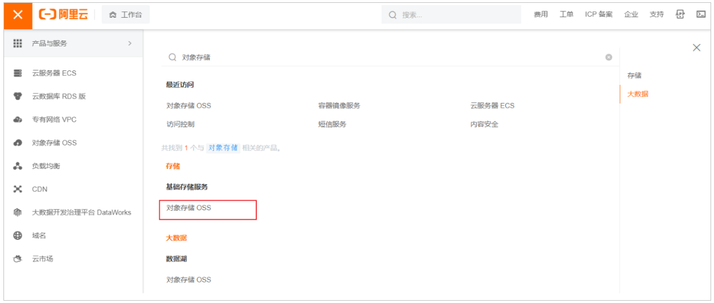
如果是第一次访问，还需要开通对象存储服务OSS
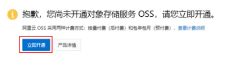
2). 开通OSS服务之后，就可以进入到阿里云对象存储的控制台

3). 点击左侧的 "Bucket列表"，创建一个Bucket
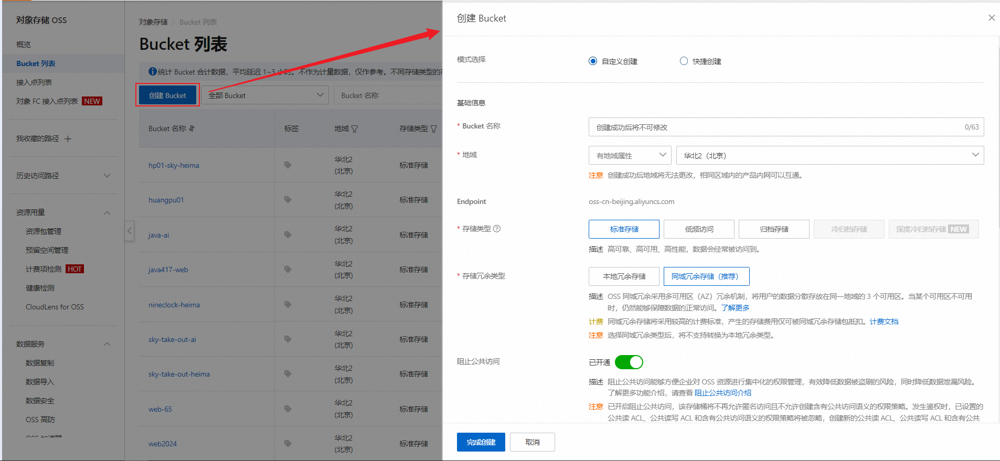
输入Bucket的相关信息.
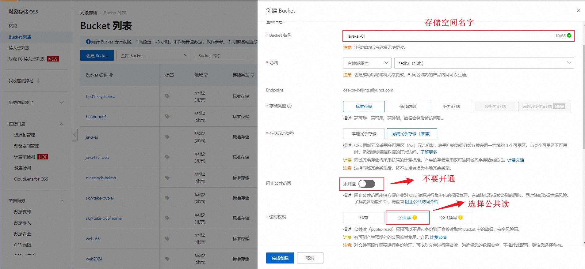
其他的信息，配置项使用默认的即可。
配置AccessKey
1). 创建AccessKey
点击 "AccessKey管理"，进入到管理页面。

点击 "创建AccessKey"。
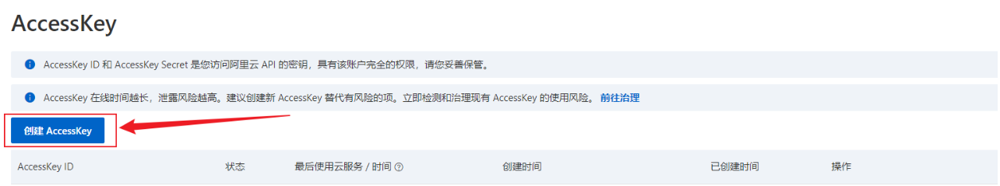
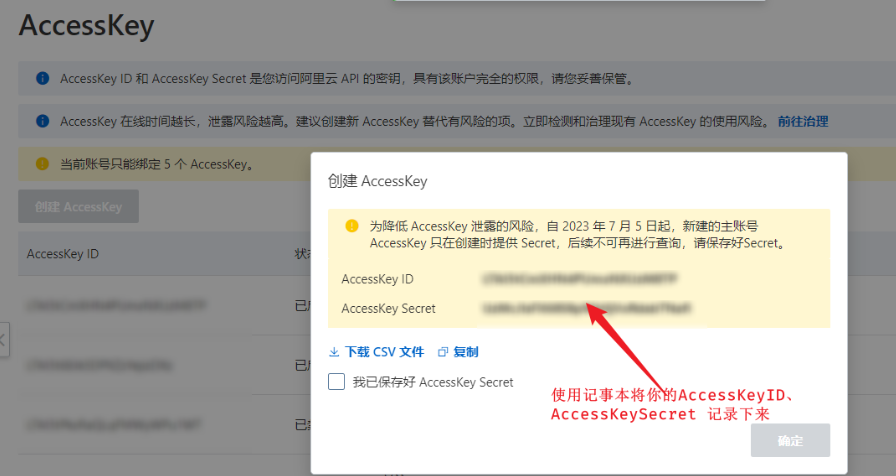
2). 配置AccessKey
以管理员身份打开CMD命令行，执行如下命令，配置系统的环境变量。
set OSS_ACCESS_KEY_ID=xxxxxxxxxxxxxxxxxxxxxxxxxxxxxxxxxxxxxxxxxxxx
set OSS_ACCESS_KEY_SECRET=xxxxxxxxxxxxxxxxxxxxxxxxxxxxxxxxxxxxxxxxxx
注意：将上述的ACCESS_KEY_ID 与 ACCESS_KEY_SECRET 的值****一定一定一定一定一定一定要替换成自己的 。
执行如下命令，让更改生效。
setx OSS_ACCESS_KEY_ID "%OSS_ACCESS_KEY_ID%"
setx OSS_ACCESS_KEY_SECRET "%OSS_ACCESS_KEY_SECRET%"
执行如下命令，验证环境变量是否生效。
echo %OSS_ACCESS_KEY_ID%
echo %OSS_ACCESS_KEY_SECRET%
入门
阿里云oss 对象存储服务的准备工作我们已经完成了，接下来我们就来完成第二步操作：参照官方所提供的sdk示例来编写入门程序。
首先我们需要来打开阿里云OSS的官方文档，在官方文档中找到 SDK 的示例代码：
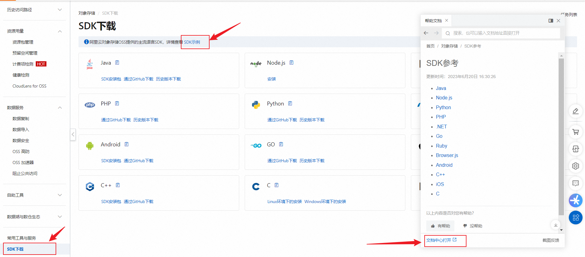
如果是在实际开发当中，我们是需要从前往后仔细的去阅读这一份文档的，但是由于现在是教学，我们就只挑重点的去看。有兴趣的同学大家下来也可以自己去看一下这份官方文档。
参照文档，引入依赖：
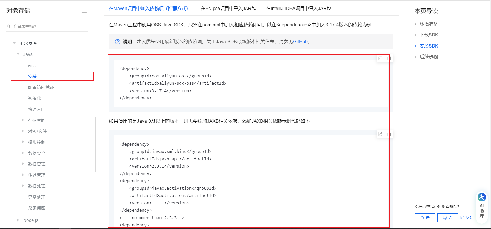
<!--阿里云OSS依赖-->
<dependency>
<groupId>com.aliyun.oss</groupId>
<artifactId>aliyun-sdk-oss</artifactId>
<version>3.17.4</version>
</dependency>
<dependency>
<groupId>javax.xml.bind</groupId>
<artifactId>jaxb-api</artifactId>
<version>2.3.1</version>
</dependency>
<dependency>
<groupId>javax.activation</groupId>
<artifactId>activation</artifactId>
<version>1.1.1</version>
</dependency>
<!-- no more than 2.3.3-->
<dependency>
<groupId>org.glassfish.jaxb</groupId>
<artifactId>jaxb-runtime</artifactId>
<version>2.3.3</version>
</dependency>
参照文档，编写入门程序：
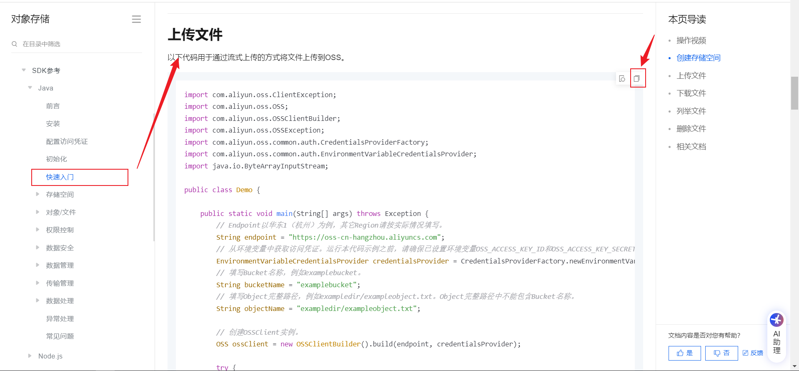
将官方提供的入门程序，复制过来，将里面的参数值改造成我们自己的即可。代码如下：
注意配置好环境变量之后,实现项目文件上传的时候,先重启编译器;
package com.itheima;
import com.aliyun.oss.*;
import com.aliyun.oss.common.auth.CredentialsProviderFactory;
import com.aliyun.oss.common.auth.EnvironmentVariableCredentialsProvider;
import com.aliyun.oss.common.comm.SignVersion;
import java.io.ByteArrayInputStream;
import java.io.File;
import java.nio.file.Files;
public class Demo {
// 前面的动态配置 需要 手动实现修改 ;
public static void main(String[] args) throws Exception {
// Endpoint以华东1（杭州）为例，其它Region请按实际情况填写。
String endpoint = "https://oss-cn-beijing.aliyuncs.com";
// 从环境变量中获取访问凭证。运行本代码示例之前，请确保已设置环境变量OSS_ACCESS_KEY_ID和OSS_ACCESS_KEY_SECRET。
EnvironmentVariableCredentialsProvider credentialsProvider = CredentialsProviderFactory.newEnvironmentVariableCredentialsProvider();
// 填写Bucket名称，例如examplebucket。
String bucketName = "java-ai";
// 填写Object完整路径，例如exampledir/exampleobject.txt。Object完整路径中不能包含Bucket名称。
String objectName = "001.jpg";
// 填写Bucket所在地域。以华东1（杭州）为例，Region填写为cn-hangzhou。
String region = "cn-beijing";
// 创建OSSClient实例。
ClientBuilderConfiguration clientBuilderConfiguration = new ClientBuilderConfiguration();
clientBuilderConfiguration.setSignatureVersion(SignVersion.V4);
OSS ossClient = OSSClientBuilder.create()
.endpoint(endpoint)
.credentialsProvider(credentialsProvider)
.clientConfiguration(clientBuilderConfiguration)
.region(region)
.build();
// 后续的类似 输入流 处理
// 使用 java7 之后提供的一个上传方式 , Files.readAllBytes(); 获取到文件的字节数组 ;
try {
File file = new File("C:\\Users\\deng\\Pictures\\1.jpg");
byte[] content = Files.readAllBytes(file.toPath());
ossClient.putObject(bucketName, objectName, new ByteArrayInputStream(content));
} catch (OSSException oe) {
System.out.println("Caught an OSSException, which means your request made it to OSS, "
+ "but was rejected with an error response for some reason.");
System.out.println("Error Message:" + oe.getErrorMessage());
System.out.println("Error Code:" + oe.getErrorCode());
System.out.println("Request ID:" + oe.getRequestId());
System.out.println("Host ID:" + oe.getHostId());
} catch (ClientException ce) {
System.out.println("Caught an ClientException, which means the client encountered "
+ "a serious internal problem while trying to communicate with OSS, "
+ "such as not being able to access the network.");
System.out.println("Error Message:" + ce.getMessage());
} finally {
if (ossClient != null) {
ossClient.shutdown();
}
}
}
}
切记，大家需要将上面的 endpoint ，bucketName，objectName，file 都需要改成自己的。
在以上代码中，需要替换的内容为：
- endpoint：阿里云OSS中的bucket对应的域名
- bucketName：Bucket名称
- objectName：对象名称，在Bucket中存储的对象的名称
- region：bucket所属区域
运行以上程序后，会把本地的文件上传到阿里云OSS服务器上。
集成
介绍
阿里云oss对象存储服务的准备工作以及入门程序我们都已经完成了，接下来我们就需要在案例当中集成oss对象存储服务，来存储和管理案例中上传的图片。
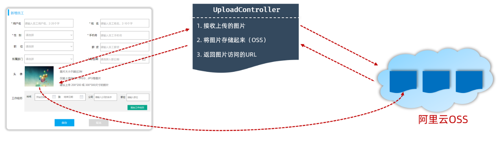
在新增员工的时候，上传员工的图像，而之所以需要上传员工的图像，是因为将来我们需要在系统页面当中访问并展示员工的图像。而要想完成这个操作，需要做两件事：
需要上传员工的图像，并把图像保存起来（存储到阿里云OSS）
访问员工图像（通过图像在阿里云OSS的存储地址访问图像）
OSS中的每一个文件都会分配一个访问的url，通过这个url就可以访问到存储在阿里云上的图片。所以需要把url返回给前端，这样前端就可以通过url获取到图像。
我们参照接口文档来开发文件上传功能：
基本信息
- 请求路径：/upload 请求方式：POST 接口描述：上传图片接口
请求参数
- 参数格式：multipart/form-data
- 参数说明：
参数名称 | 参数类型 | 是否必须 | 示例 | 备注 |
image | file | 是 |
响应数据
- 参数格式：application/json
- 参数说明：
参数名 | 类型 | 是否必须 | 备注 |
code | number | 必须 | 响应码，1 代表成功，0 代表失败 |
msg | string | 非必须 | 提示信息 |
data | object | 非必须 | 返回的数据，上传图片的访问路径 |
- 响应数据样例：
{
"code": 1,
"msg": "success",
"data": "https://web-framework.oss-cn-hangzhou.aliyuncs.com/2022-09-02-00-27-0400.jpg"
}
实现
1). 引入阿里云OSS上传文件工具类（由官方的示例代码改造而来）
package com.itheima.utils;
import com.aliyun.oss.*;
import com.aliyun.oss.common.auth.CredentialsProviderFactory;
import com.aliyun.oss.common.auth.EnvironmentVariableCredentialsProvider;
import com.aliyun.oss.common.comm.SignVersion;
import org.springframework.stereotype.Component;
import java.io.ByteArrayInputStream;
import java.time.LocalDate;
import java.time.format.DateTimeFormatter;
import java.util.UUID;
@Component
public class AliyunOSSOperator {
private String endpoint = "https://oss-cn-beijing.aliyuncs.com";
private String bucketName = "java-ai";
private String region = "cn-beijing";
public String upload(byte[] content, String originalFilename) throws Exception {
// 从环境变量中获取访问凭证。运行本代码示例之前，请确保已设置环境变量OSS_ACCESS_KEY_ID和OSS_ACCESS_KEY_SECRET。
EnvironmentVariableCredentialsProvider credentialsProvider = CredentialsProviderFactory.newEnvironmentVariableCredentialsProvider();
// 填写Object完整路径，例如202406/1.png。Object完整路径中不能包含Bucket名称。
//获取当前系统日期的字符串,格式为 yyyy/MM
String dir = LocalDate.now().format(DateTimeFormatter.ofPattern("yyyy/MM"));
//生成一个新的不重复的文件名
String newFileName = UUID.randomUUID() + originalFilename.substring(originalFilename.lastIndexOf("."));
String objectName = dir + "/" + newFileName;
// 创建OSSClient实例。
ClientBuilderConfiguration clientBuilderConfiguration = new ClientBuilderConfiguration();
clientBuilderConfiguration.setSignatureVersion(SignVersion.V4);
OSS ossClient = OSSClientBuilder.create()
.endpoint(endpoint)
.credentialsProvider(credentialsProvider)
.clientConfiguration(clientBuilderConfiguration)
.region(region)
.build();
try {
ossClient.putObject(bucketName, objectName, new ByteArrayInputStream(content));
} finally {
ossClient.shutdown();
}
return endpoint.split("//")[0] + "//" + bucketName + "." + endpoint.split("//")[1] + "/" + objectName;
}
}
2). 修改UploadController代码
package com.itheima.controller;
import com.itheima.pojo.Result;
import com.itheima.utils.AliyunOSSOperator;
import lombok.extern.slf4j.Slf4j;
import org.springframework.beans.factory.annotation.Autowired;
import org.springframework.web.bind.annotation.PostMapping;
import org.springframework.web.bind.annotation.RestController;
import org.springframework.web.multipart.MultipartFile;
import java.io.File;
import java.util.UUID;
@Slf4j
@RestController
public class UploadController {
@Autowired
private AliyunOSSOperator aliyunOSSOperator;
@PostMapping("/upload")
public Result upload(MultipartFile file) throws Exception {
log.info("上传文件：{}", file);
if (!file.isEmpty()) {
// 生成唯一文件名
String originalFilename = file.getOriginalFilename();
String extName = originalFilename.substring(originalFilename.lastIndexOf("."));
String uniqueFileName = UUID.randomUUID().toString().replace("-", "") + extName;
// 上传文件
String url = aliyunOSSOperator.upload(file.getBytes(), uniqueFileName);
return Result.success(url);
}
return Result.error("上传失败");
}
}
使用 Apifox 测试：
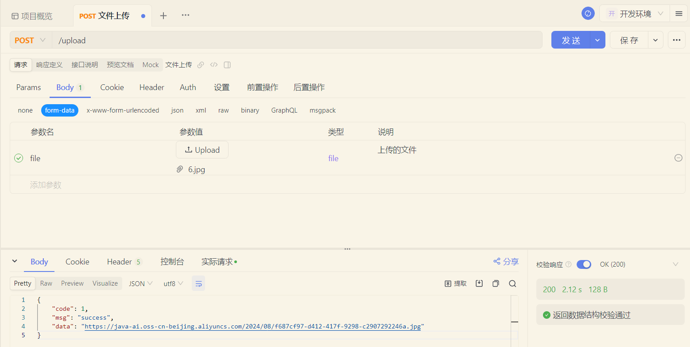
接口测试通过之后，我们就可以进行前后端联调了。
功能优化
员工管理的新增功能我们已开发完成，但在我们所开发的程序中还一些小问题，下面我们就来分析一下当前案例中存在的问题以及如何优化解决。
在刚才我们制作的AliyunOSS操作的工具类中，我们直接将 endpoint、bucketName参数直接在java文件中写死了。如下所示：
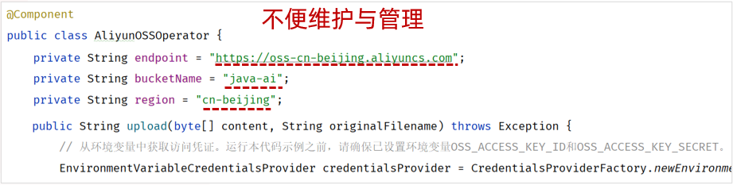
如果后续，项目要部署到测试环境、上生产环境，我们需要来修改这两个参数。 而如果开发一个大型项目，所有用到的技术涉及到的这些个参数全部写死在java代码中，是非常不便于维护和管理的。
那么对于这些容易变动的参数，我们可以将其配置在配置文件中，然后通过 @Value 注解来注解外部配置的属性。如下所示：
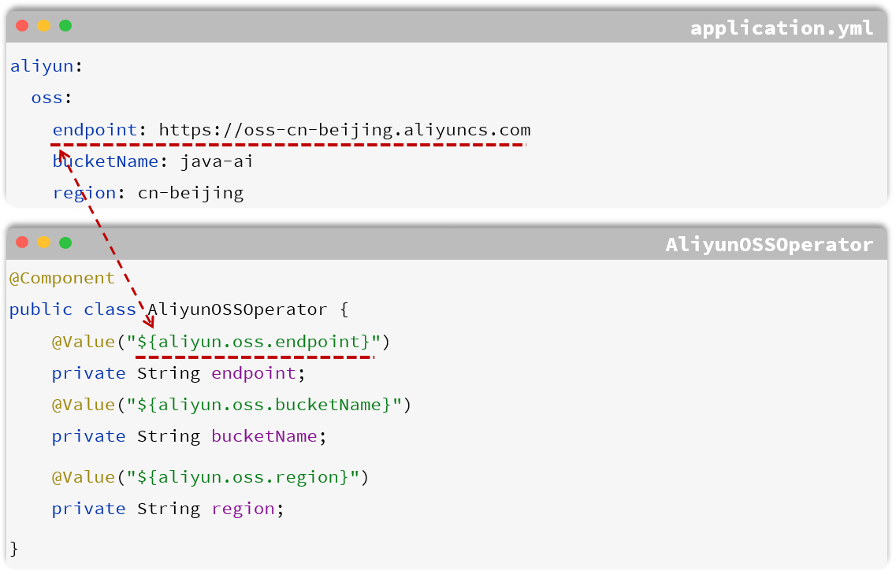
具体实现代码如下：
1). application.yml
#阿里云OSS
aliyun:
oss:
endpoint: https://oss-cn-beijing.aliyuncs.com
bucketName: java-ai
region: cn-beijing
2). AliyunOSSOperator
package com.itheima.utils;
import com.aliyun.oss.*;
import com.aliyun.oss.common.auth.CredentialsProviderFactory;
import com.aliyun.oss.common.auth.EnvironmentVariableCredentialsProvider;
import com.aliyun.oss.common.comm.SignVersion;
import org.springframework.beans.factory.annotation.Autowired;
import org.springframework.beans.factory.annotation.Value;
import org.springframework.stereotype.Component;
import java.io.ByteArrayInputStream;
import java.time.LocalDate;
import java.time.format.DateTimeFormatter;
import java.util.UUID;
@Component
public class AliyunOSSOperator {
//方式一: 通过@Value注解一个属性一个属性的注入
@Value("${aliyun.oss.endpoint}")
private String endpoint;
@Value("${aliyun.oss.bucketName}")
private String bucketName;
@Value("${aliyun.oss.region}")
private String region;
public String upload(byte[] content, String originalFilename) throws Exception {
// 从环境变量中获取访问凭证。运行本代码示例之前，请确保已设置环境变量OSS_ACCESS_KEY_ID和OSS_ACCESS_KEY_SECRET。
EnvironmentVariableCredentialsProvider credentialsProvider = CredentialsProviderFactory.newEnvironmentVariableCredentialsProvider();
// 填写Object完整路径，例如2024/06/1.png。Object完整路径中不能包含Bucket名称。
//获取当前系统日期的字符串,格式为 yyyy/MM
String dir = LocalDate.now().format(DateTimeFormatter.ofPattern("yyyy/MM"));
//生成一个新的不重复的文件名
String newFileName = UUID.randomUUID() + originalFilename.substring(originalFilename.lastIndexOf("."));
String objectName = dir + "/" + newFileName;
// 创建OSSClient实例。
ClientBuilderConfiguration clientBuilderConfiguration = new ClientBuilderConfiguration();
clientBuilderConfiguration.setSignatureVersion(SignVersion.V4);
OSS ossClient = OSSClientBuilder.create()
.endpoint(endpoint)
.credentialsProvider(credentialsProvider)
.clientConfiguration(clientBuilderConfiguration)
.region(region)
.build();
try {
ossClient.putObject(bucketName, objectName, new ByteArrayInputStream(content));
} finally {
ossClient.shutdown();
}
return endpoint.split("//")[0] + "//" + bucketName + "." + endpoint.split("//")[1] + "/" + objectName;
}
}
如果只有一两个属性需要注入，而且不需要考虑复用性，使用@Value注解就可以了。
内部元素 : "${ 直接写在配置文件中的地址即可 }"
但是使用@Value注解注入配置文件的配置项，如果配置项多，注入繁琐，不便于维护管理 和 复用。如下所示:
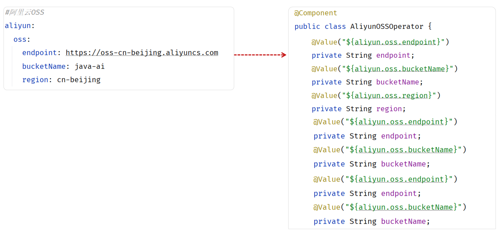
那么有没有一种方式可以简化这些配置参数的注入呢？答案是肯定有，在Spring中给我们提供了一种简化方式，可以直接将配置文件中配置项的值自动的注入到对象的属性中。
Spring提供的简化方式套路：
1). 需要创建一个实现类，且实体类中的属性名和配置文件当中key的名字必须要一致
比如：配置文件当中叫endpoint，实体类当中的属性也得叫endpoint，另外实体类当中的属性还需要提供 getter / setter方法
2). 需要将实体类交给Spring的IOC容器管理，成为IOC容器当中的bean对象
3). 在实体类上添加@ConfigurationProperties注解，并通过prefix属性来指定配置参数项的前缀

具体实现步骤:
1). 定义实体类AliyunOSSProperties ，并交给IOC容器管理 (
使用注释 @Compoment 将类交给 IOC 容器内部实现管理 )
使用注释@ConfigurationProperties(prefix= "写好前缀即可")
内部的中间代码需要自己去 OOS 获取到配置文件 , 实现 CV ;
package com.itheima.utils;
import lombok.Data;
import org.springframework.boot.context.properties.ConfigurationProperties;
import org.springframework.stereotype.Component;
@Data
@Component
@ConfigurationProperties(prefix = "aliyun.oss")
public class AliyunOSSProperties {KEY
private String endpoint;
private String bucketName;
private String region;
}
2). 修改AliyunOSSOperator
package com.itheima.utils;
import com.aliyun.oss.*;
import com.aliyun.oss.common.auth.CredentialsProviderFactory;
import com.aliyun.oss.common.auth.EnvironmentVariableCredentialsProvider;
import com.aliyun.oss.common.comm.SignVersion;
import org.springframework.beans.factory.annotation.Autowired;
import org.springframework.beans.factory.annotation.Value;
import org.springframework.stereotype.Component;
import java.io.ByteArrayInputStream;
import java.time.LocalDate;
import java.time.format.DateTimeFormatter;
import java.util.UUID;
@Component
public class AliyunOSSOperator {
//方式一: 通过@Value注解一个属性一个属性的注入
//@Value("${aliyun.oss.endpoint}")
//private String endpoint;
//@Value("${aliyun.oss.bucketName}")
//private String bucketName;
//@Value("${aliyun.oss.region}")
//private String region;
直接适用IOC获取到放入 IOC容器中的类对象;
适用set , get 方法即可 ;
创建的对象可以直接适用@ConfigurationProperties注解，并通过prefix属性来指定配置参数项的前缀
@Autowired
private AliyunOSSProperties aliyunOSSProperties;
public String upload(byte[] content, String originalFilename) throws Exception {
String endpoint = aliyunOSSProperties.getEndpoint();
String bucketName = aliyunOSSProperties.getBucketName();
String region = aliyunOSSProperties.getRegion();
// 从环境变量中获取访问凭证。运行本代码示例之前，请确保已设置环境变量OSS_ACCESS_KEY_ID和OSS_ACCESS_KEY_SECRET。
EnvironmentVariableCredentialsProvider credentialsProvider = CredentialsProviderFactory.newEnvironmentVariableCredentialsProvider();
// 填写Object完整路径，例如2024/06/1.png。Object完整路径中不能包含Bucket名称。
//获取当前系统日期的字符串,格式为 yyyy/MM
String dir = LocalDate.now().format(DateTimeFormatter.ofPattern("yyyy/MM"));
//生成一个新的不重复的文件名
String newFileName = UUID.randomUUID() + originalFilename.substring(originalFilename.lastIndexOf("."));
String objectName = dir + "/" + newFileName;
// 创建OSSClient实例。
ClientBuilderConfiguration clientBuilderConfiguration = new ClientBuilderConfiguration();
clientBuilderConfiguration.setSignatureVersion(SignVersion.V4);
OSS ossClient = OSSClientBuilder.create()
.endpoint(endpoint)
.credentialsProvider(credentialsProvider)
.clientConfiguration(clientBuilderConfiguration)
.region(region)
.build();
try {
ossClient.putObject(bucketName, objectName, new ByteArrayInputStream(content));
} finally {
ossClient.shutdown();
}
return endpoint.split("//")[0] + "//" + bucketName + "." + endpoint.split("//")[1] + "/" + objectName;
}
}